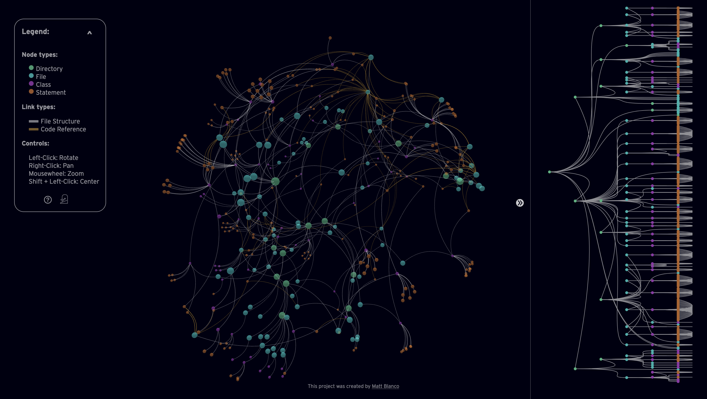
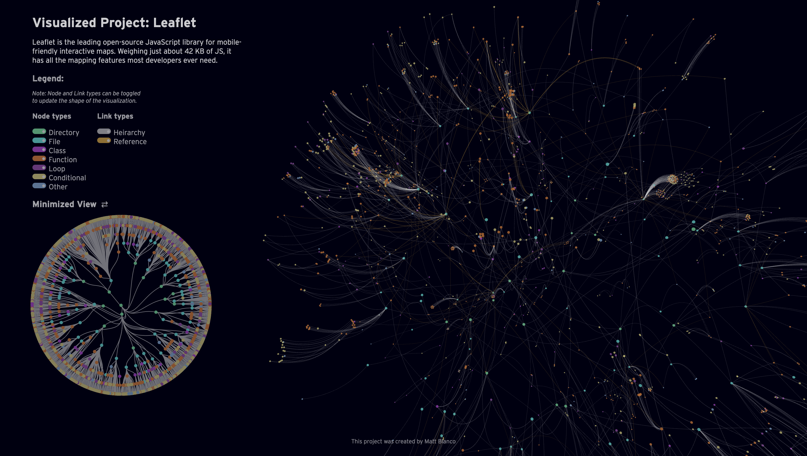

Pan & Zoom Interactions

Project Type: Interactive Visualization (JS, D3.js, Three.js, CSS, HTML)
The project first began as an idea in 2021 with a simple question: How can code be easier to understand? Frustrated by the learning process at several internships and seeing friends struggle with the linear process of traditional programming practice I wanted to imagine something new. Fast-forward three years and in my final two semesters at Northeastern University I finally felt I had to skills to accomplish my goal. Beginning as a seft-directed Honors in the Discipline project and supported by PEAK Summit Award from the Office of Undergraduate Research and Fellowship, and under the advising of Todd Linkner, I had the freedom and funding to iterate and turn my idea into a reality.
Inspired by the quote "Any sufficiently advanced technolgoy is indistinguishable from magic." by Arthur C. Clarke was my guiding mantra when I started working. I wanted to create something new and push against traditional methods of coding to invoke curiosity and platfulness. After resarching and conducting a literature review on current methods of visualizing codeThe original goal was to have files act as "solar systems" and the closer you zoomed into a
Version 1
Version 2


The visualization and encoding system can also be used to help teach people about object-oriented and other heirarchical design systems within code. By seeing how aspects of scope are nested within one another it can be easier to understand intangible code.